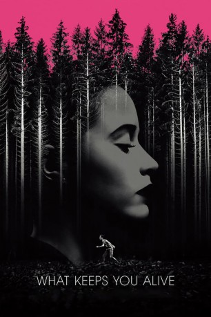

#10407 What Keeps You Alive
 
 IMDB-Wertung: 5.8 / 10
IMDB-Wertung: 5.8 / 10  Tomatometer: 82
Tomatometer: 82  Metascore: 66
Metascore: 66 
A young newlywed lesbian couple goes to an idyllic remote forest cabin to spend some quality time together. Unfortunately, one of them turns out to be an emotionless sociopath and sadistic serial killer who plans to hunt her emotional new wife down and brutally torture her to death both physically and mentally, just like she did with her first wife. Will history repeat itself?
Jahr: 2018
Dauer: 99 Minuten
FSK: 16
Land: Kanada Studio: Sunfilm EntertainmentTonspuren: DTS - ,
Untertitel: Deutsch,
Auflösung: 1080p (1920x808) Größe: 3348 MB
Genre: Thriller, Horror
Regisseur: Colin Minihan
Drehbuch: Colin Minihan
Soundtrack: Brittany Allen
Darsteller:
- Hannah Emily Anderson als Jackie
 Brittany Allen als Jules
Brittany Allen als Jules Martha MacIsaac als Sarah
Martha MacIsaac als Sarah- Joey Klein als Daniel
- Charlotte Lindsay Marron als Young Jackie
Datei: X:\2018(N-Z)\What Keeps You Alive (2018, FSK16, 1920x808).mkv seit 04.01.2019
Festplatte: HD 2018(G-Z)-2019(A-Z)
 Es gibt insgesamt 172 Filme in der Gruppe '2018(N-Z)'
Es gibt insgesamt 172 Filme in der Gruppe '2018(N-Z)'